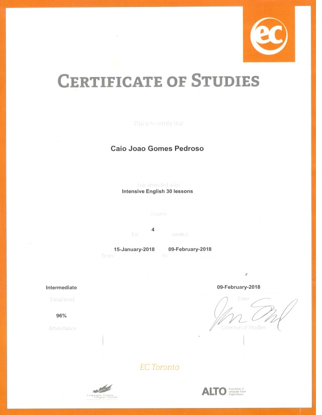
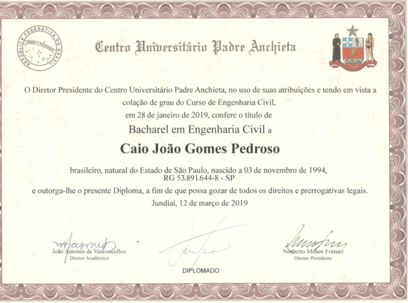
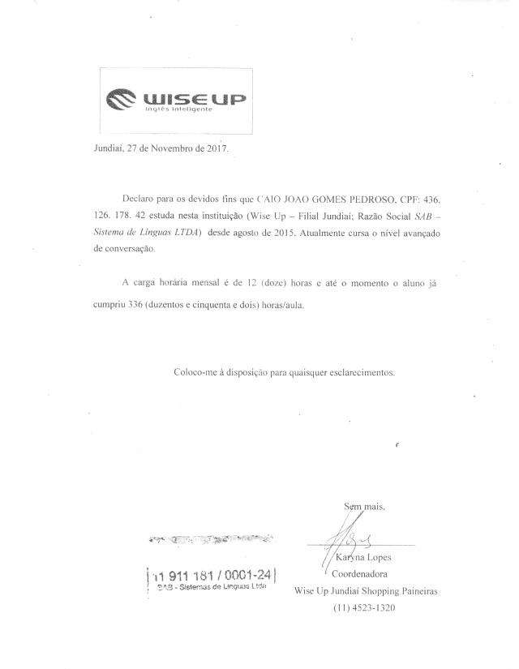

BI Analyst · Business Automation · Python Dev
Última localização: Louveira / SP · +15 anos em atividade
ABRINDO ARQUIVO DO CASO…

 suspeito principal
suspeito principal
CAIO PEDROSO
“Dados que orientam decisões,
automação que devolve seu tempo.”
Mais de 15 anos de atuação nas áreas fiscal, financeira e de tecnologia. Supervisor de Operações na Green Village Mobile Homes e Analista de Dados / Responsável Fiscal na Romica Brasil.
Se você chegou até aqui, imagino que queira conhecer um pouco mais sobre quem está por trás deste trabalho — então vou me apresentar de forma simples e direta.
Meu nome é Caio Pedroso, nasci em 1994 e atualmente moro em Louveira, no interior de São Paulo. Ao longo de mais de 15 anos de experiência profissional, venho construindo minha trajetória nas áreas fiscal, financeira e de tecnologia, sempre com um objetivo claro: transformar dados em decisões mais inteligentes e eficientes.
Hoje atuo como Supervisor de Operações na Green Village Mobile Homes e também como Analista de Dados e Responsável Fiscal na Romica Brasil. Meu dia a dia envolve análise de dados, otimização de processos e apoio direto na tomada de decisões estratégicas.
Tenho experiência com Excel avançado, Power BI, SQL (MySQL e Oracle), Python e automação de processos com uso de inteligência artificial.
Mais do que as ferramentas, o que realmente guia meu trabalho é a capacidade de enxergar oportunidades de melhoria e transformar rotinas complexas em soluções mais simples e eficazes.
Sou movido por desafios. É isso que me impulsiona a evoluir continuamente e gerar valor por onde passo. Se quiser conversar, fico à disposição.
Centro Universitário Padre Anchieta — Jundiaí
Escola Professor Luís Rosa — Jundiaí
Wise Up — Jundiaí
EC English Holdings — Toronto, Canadá

English · Toronto 2018
Bacharelado · Eng. Civil
Wise Up · EnglishPortuguês — Nativo (100%)
Inglês — Avançado (70%)
Espanhol — Básico (30%)
Asimov Academy & Alura — dados, programação, banco de dados, automação e front-end. Clique em qualquer prova abaixo para vê-la na fotografia.
Supervisão das operações no Brasil, coordenando equipes e garantindo a eficiência dos processos digitais e operacionais.
Análise de dados e gestão fiscal, combinando expertise analítica com conhecimento tributário para otimização de processos.
Mais de uma década na mesma casa: do estágio em T.I. à liderança fiscal e, hoje, à análise de dados. Uma escalada construída com consistência, processos e resultados.
Excel Avançado · 100%
SQL · MySQL · Oracle · 90%
Python · 85%
Pandas · 85%
Power BI · 60%
Claude · 100%
OpenAI · 100%
Google AI Studio · 90%
DevOps · 60%
Rotinas Administrativas · 100%
Rotinas Fiscais · 100%
Rotinas de R.H. · 70%
Rotinas Financeiras · 100%
Gestão de Equipe · 90%
 ★ Gestão Financeira IA
★ Gestão Financeira IA
 Planilha GFP
Planilha GFP
 Gestão Empresarial
Gestão Empresarial
 ★ Gestão Complexa
★ Gestão Complexa
 Green Village
Green Village
 Automação de Tarefas
Automação de Tarefas
 Web Scraping IA
Web Scraping IA
 Manutenção Wix
o suspeito
Manutenção Wix
o suspeito
“Dados que orientam decisões,
automação que devolve seu tempo.”
Profissional com mais de 15 anos de experiência nas áreas fiscal, financeira e de tecnologia. Nasceu em 1994, mora em Louveira (SP) e construiu a carreira transformando dados em decisões mais inteligentes e eficientes.
Hoje atua como Supervisor de Operações na Green Village Mobile Homes e como Analista de Dados / Responsável Fiscal na Romica Brasil — unindo análise de dados, automação de processos e apoio à tomada de decisão.
Mais do que as ferramentas, o que guia seu trabalho é enxergar oportunidades de melhoria e transformar rotinas complexas em soluções simples e eficazes. Movido por desafios e pela pergunta constante: "como isso pode ser feito de forma melhor?"
★ Gestão Financeira IAAplicação completa de gestão financeira pessoal: investimentos em renda variável e fixa, múltiplas contas, cartões, metas e relatórios. Agente de IA via WhatsApp para lançamentos, edição e relatórios. Next.js · PostgreSQL · IA · WhatsApp
Acessar projetoPlanilha GFPPlanilha completa com lançamentos dinâmicos, macros, login com senha, banco de dados oculto, múltiplos cartões, investimentos, cálculo de aposentadoria e relatórios. Excel · VBA · Macros
Gestão EmpresarialPlanilha versátil para gestão empresarial de qualquer segmento, com cálculos, análises e relatórios complexos para apoiar o empresário no dia a dia. Excel · VBA · Análise
★ Gestão ComplexaApp web completa: login multinível, ponto digital, Vendas com 3+ mil anúncios via API, Logística, RH com folha automática, Financeiro com fluxo de caixa, CEO, T.I. e Desenvolvedor. React · Tailwind · SQLite · API
Automação de TarefasAplicação interna para modernizar tarefas empresariais: formação de preço, controle de estoque e geração de rotas logísticas e romaneios diários. Next.js · Prisma · API
Web Scraping IAColeta automatizada de anúncios de diversos fornecedores; agente de IA padroniza, traduz, organiza e calcula preços finais, gravando direto em PostgreSQL. Python · Next.js · IA · PostgreSQL
Green VillageSite institucional de empresa portuguesa de casas móveis. Liderança de equipe e coordenação de frontend/backend, com foco em conversão. Next.js · Frontend · Liderança
Visitar siteManutenção WixAdministração, manutenção e atualização contínua de site institucional em Wix, com coordenação da equipe de T.I. e garantia de performance e integridade do conteúdo. Wix · Gestão · T.I.
Um profissional que resolve o caso. Fale comigo: